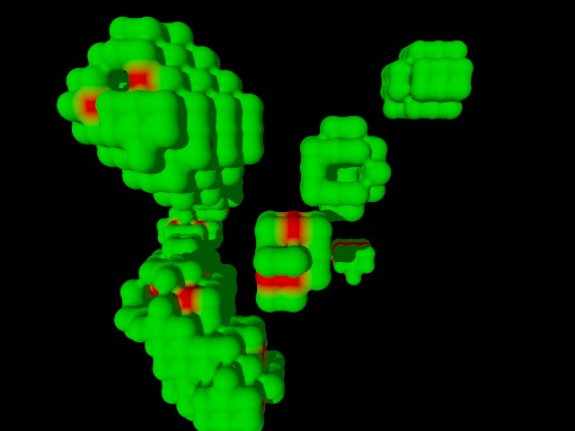

POV-Ray Object Collection
|  |
You can add a 3D lifeform to your scene file by including the "life3d.inc" file and running the 'Life3D' macro with appropriate parameter settings. The macros are intended to be used along with POV-Ray's animation options to create an animated sequence of images, illustrating the development and growth of 3D forms based upon a simple set of control parameters. The 'life3d.ini' file can be used to specify the animation options, or you can add your own animation options via the command-line. To see the following lifeform evolve over time you can try the animation command-line options '+kfi1 +kff55'.
| 12,12,12, | // Dimensions | |
| array[4]{3,5,4,5}, | // Rules array | |
| Life3D_fromliveArray, | // First generation source | |
| Life3D_blobCells, | // Cell type | |
| true, | // Wrapping | |
| frame_number-1 | // Generation indicator |
The main macro that you need to call to add a 3D lifeform to your scene file is:
Life3D(xSize, ySize, zSize, rules, gen1From, cellType, wrap, genNum)
Where:
| xSize | = | an integer specifying the 'x' dimension of the array of cells. | ||
| ySize | = | an integer specifying the 'y' dimension of the array of cells. | ||
| zSize | = | an integer specifying the 'z' dimension of the array of cells. | ||
| rules | = | an array[4] of integers specifying the Life rules | ||
| Using rules=array[4]{r1,r2,r3,r4}; makes the rule: | ||||
|
If a cell is already 'live' and it has from r1 through r2 (inclusive) live neighbors, then it remains alive in the next generation. That is, it will survive.
Otherwise it becomes 'dead'. On the other hand, if the cell is now dead, but has from r3 through r4 (inclusive) live neighbors then it will be alive in the next generation. | ||||
| gen1From | = | an integer to tell the macro where the first generation comes from. Constants are declared in the 'life3d.inc' file that you can use for this parameter: | ||
| Life3D_fromliveArray | (2)
Takes an array of cell indices and each cell in the array will be 'alive' in the first generation. For example, using the array
#declare Life3D_liveArray= array[2][3]={{0,0,1},{0,0,0}} would make two cells alive: the cell at 0,0,1 and the cell at 0,0,0. The second index of the array must be '3' since a cell is specified by three indices. | |||
| Life3D_fromFile | (1) Gets the first generation from a file. You'll need to set up such a file and assign the file name to 'Life3D_initialGenerationFile'. The file needs to contain the cell values for all of the cells in the Life game where cell value > 0 is alive and cell value <=0 is dead. | |||
| Life3D_fromRandom | (0) Generates the first generation randomly with 'Life3D_livePercent' of the cells alive. | |||
| cellType | = | an integer to tell the macro the type of cells to generate. Constants are declared in the 'life3d.inc' file that you can use for this parameter: | ||
| Life3D_cubeCells | (0) plain cubes occupy live cells, or some other object declared as 'Life3D_cellObject'. | |||
| Life3D_blobCells | (1) blobs are used to populate live cells. | |||
| wrap | = | an integer to tell the macro whether to wrap the cell array or not. Constants are declared in the 'life3d.inc' file that you can use for this parameter: | ||
| Life3D_nowrap | (0 or false) Means that a cell on the edge of the cell array has no neighboring cells outside the array. | |||
| Life3D_toruswrap | (1 or true) 'wraps' the array around from top to bottom and left to right. so a cell at the edge has neighboring cells on the other side of the array. | |||
| genNum | = | an integer to indicate which generation this is. The first generation is '0'. Currently this is only important to the macro to distinguish the first generation from the rest. If Initial_Frame = 1 (which is the default value) then you can use frame_number-1 for genNum. | ||
| Life3D_RS1 | A random number seed used by the 'Life3D_fillCellArrayRandomly' macro when the 'gen1From' parameter on the 'Life3D' macro is set to 'Life3D_fromRandom'. The default is 'seed(12)', but you can set this to generate a different randomised initial cell start configuration. For example: #declare Life3D_RS1=seed(341); |
| Life3D_gbNewTexture | The texture to be applied to newly 'alive' cells in the matrix. This defaults to a flat green color. To set it to Cyan, you could specify: #declare Life3D_gbNewTexture=texture{pigment{rgb<0,1,1>}} |
| Life3D_gbOldTexture | The texture to be applied to mature (previously existing) cells in the matrix. This defaults to a flat red color. To set it to Aquamarine by name, using the 'colors.inc', you could specify:
#include "colors.inc"
#declare Life3D_gbOldTexture=texture{pigment{Aquamarine}} |
| Life3D_gbDiedTexture | The texture to be applied to newly 'deceased' cells in the matrix. This defaults to a highly transparent White color. To make it a little less transparent (using the 'colors.inc'), you could specify:
#include "colors.inc"
#declare Life3D_gbDiedTexture=texture{pigment{White transmit .5}} |
| Life3D_diffScale | If this value is greater than zero, then old cells and dead cells are represented using a different size as well as a different color, compared to one-generation old cells. Older cells are larger, dead cells smaller. This value indicates how much larger/smaller and defaults to '0'. For example, try a setting of: #declare Life3D_diffScale=.5; |
| Life3D_livePercent | An integer between 1 and 100 used by the 'Life3D_fillCellArrayRandomly' macro when the 'gen1From' parameter on the 'Life3D' macro is set to ' Life3D_fromRandom'. This defaults to '10' generating a matrix where about 10 percent of the cells will be alive. You can adjust this percentage. For example: #declare Life3D_livePercent=20; |
| Life3D_liveArray | You can use this array to initially populate the matrix with living cells when the 'gen1From' parameter on the 'Life3D' macro is set to 'Life3D_fromliveArray'. This 3D array can be set by hand, or you can use one of the predefined arrays 'Life3D_OOOArray', 'Life3D_liveGlider5766', or 'Life3D_liveGlider4555'. For example: #declare Life3D_liveArray=Life3D_liveGlider4555; |
| Life3D_initialGenerationFile | You can use this identifier to specify the name of a file that will be used to populate the matrix with living cells when the 'gen1From' parameter on the 'Life3D' macro is set to 'Life3D_fromFile'. For example: #declare Life3D_initialGenerationFile='myfile.txt'; |
| Life3D_cellObject | You can use this object declaration to override the default object used to represent a cell when the 'cellType' parameter on the 'Life3D' macro is set to 'Life3D_cubeCells'. For example: #declare Life3D_cellObject=sphere{0,1/2} |
| Life3D_tempCellfilename | Each generation (each frame in an animation sequence) saves the last generation of the lifeform matrix into a file. By default it uses a file called 'life3d.tmp'. If you need to change the file used for this you can override the default. For example:
#declare Life3D_tempCellfilename="tempfile.tmp";
The first three numbers in the file are the cell array dimensions. Then come the 'x layers' of cells. Each x layer is a 'yz' array of cell values. |
Version 1.0 of the include file was adapted to conform to the naming conventions for the POV-Ray Object Collection by Chris Bartlett in October 2009. All identifiers are now prefixed with 'Life3D_' and all file names start with 'life3d'. The following additional changes were made: